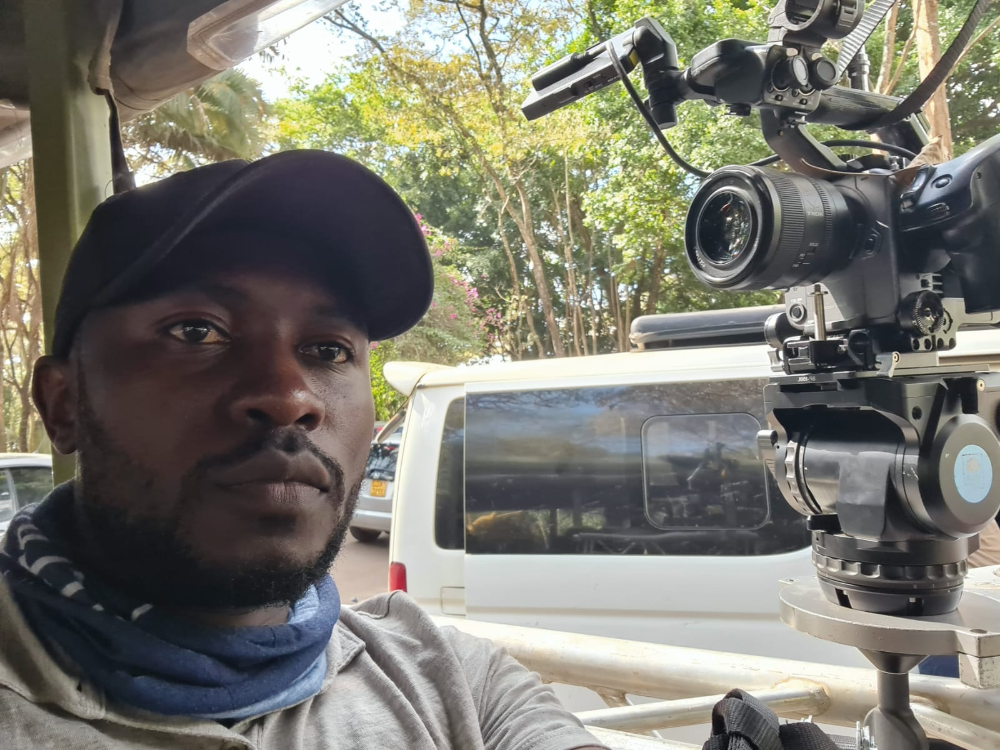
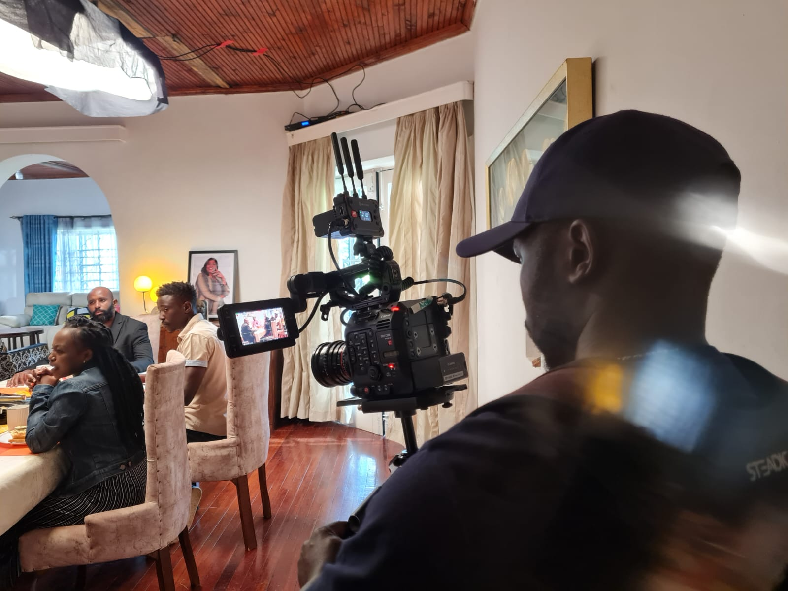

Every frame is an intentional piece of storytelling crafted through deliberate lighting, striking composition and authentic emotion
Rooted & trained at the Kibera Film School, Vincent Oduor Ochieng has spent over 15 years sharpening his visual language across the East African film and television ecosystem. His portfolio spans hit TV series like County 49 and Kina, M-Net feature films, impact documentaries and regional commercial campaigns for major brands. Having collaborated with leading production houses such as Kibanda Pictures, Zamaradi Productions, and Spielworks Media, he has established himself as a trusted Director of Photography capable of delivering broadcast-grade visuals at scale.
Fluent across RED, ARRI, Canon and Sony cinema rigs and just as sharp in post, cutting and color grading in DaVinci Resolve, Premiere Pro and Final Cut
In his element behind the camera, building world-class visuals on location.
Serving as DOP under Live Eye Productions for Second Family was all about translating internal conflict into visual tension on screen. We wanted the camera work to feel intimate yet cinematic—using tight framing, naturalistic light and deliberate shadows to mirror the secrets each character holds. Moving fast on location with the Live Eye crew meant every setup had to be intentional, from how we lit high-energy ensemble scenes to capturing quiet, subtle beats between actors.
